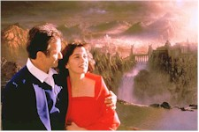
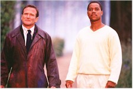

I wouldn’t blame the actors that much. It’s hard enough acting against a blue screen and with the wooden material by Ron Bass (How Stella Got Her Groove Back, My Best Friend’s Wedding, Waiting to Exhale) and the inept direction by New Zealander Vincent Ward, his last effort being 1992’s Map of the Human Heart, a modest love story with breathtaking visuals. Granted, they have created an entrancing virtual world in What Dreams, but the film is devoid of everything else, particularly common sense. It’s so immersed in its Technicolor self that it forgot what it should be -- something to entertain its viewers, not color blind them.

Within the first few moments of the film "soulmates" Annie (Annabella Sciorra) and Christy Nielsen (Robin Williams), meet, marry, and are devastated by the tragic death of their teenaged children in an automobile accident. Chris, a semi-happy, semi-sad shrink is killed four years later and lands in heaven, a blurry state of blissful consciousness literally drawn in gloppy drippings of artist’s oils (inspired by his and mostly Annie’s paintings). Gooey jacaranda blue flowers ooze in his hand and squish under his feet. The rest of the film is the moaning deceased husband’s quest for his holy grail, his Annie, who ends up somewhere a little less accessible than next door when she finds her inspiration, family, and life drained from her very being (Oh, Lordy, Lordy!). There are a fistful of rainbow-endowed flashbacks and flash-forwards pointing to the family’s troubled times -- the death of the family Dalmatian, the children’s problems with school. And the kids, at first I thought it was two boys, Ian and Murray, but it turns out the dialogue was so cloudy and the tomboy look so perfect that it eventually dawned on me it was Ian and Marie (Josh Paddock and Jessica Brooks Grant).Heaven isn’t a vacuum (the movie may be) and hence there are a few more characters that actually float in an out of the picture. Cuba Gooding, Jr. is Albert (or is he), a guiding spirit who escorts our "hero" through the expressionist landscape of his "own private universe."

Rosalind Chao is tour guide Leona (or is she), who provides the key to her 19th century consciousness city (seems a lot of heaven is decorated by the same design firm). And of course Max Von Sydow (previously paired with Williams in 1990’s Awakenings) as The Tracker (or is he), obviously selected because of the Swedish actor’s appearance as Antonious Bloch, more than 40 years ago, in The Seventh Seal, Ingmar Bergman’s award winning allegory on death. In the face of the ultimate authority, Chris rebels (I knew he should have been a lawyer) and hitches a ride into a sea of memories, tumbles through a landscape of mumbling heads, and falls into another recollection. He, and the movie, go to Hell for an overnight stay (again, remember, he’s on a quest!). Of course, this is a gray, drab black-and-white Twilight Zone rerun Hell, greatly inspired by the terrifying works of Dutch painter Hieronymus Bosch, a reproduction appearing above the Nielsen headboard in one of those pesky flashbacks. Amidst the rubble, Chris searches for his lost love, but he’s only got three minutes or else. In case you’re wondering who the heck sets these rules, it must be the producers realizing their going over their budget. Better get out the egg timer, then, right? Bing, time’s up.Well, I’ll stop here. One guess how the movie ends. Yes, that’s right. Badly, for anyone silly enough to sit through it.